GPPM with dynamical systems¶
This tutorial introduces the use of the software GPMM-DS available at https://gitlab.inria.fr/epione/GP_progression_model_V2.git@feature/propagation_models
Objectives :¶
Discover a framework for investigation of bio–mechanical hypotheses governing disease progression
Check out how you can model amyloid dynamics over the brain connectome in ADNI data
Installation¶
!pip install git+https://gitlab.inria.fr/epione/GP_progression_model_V2.git@feature/propagation_models
Collecting git+https://gitlab.inria.fr/epione/GP_progression_model_V2.git@feature/propagation_models
Cloning https://gitlab.inria.fr/epione/GP_progression_model_V2.git (to revision feature/propagation_models) to /tmp/pip-req-build-39trl1ns
Running command git clone -q https://gitlab.inria.fr/epione/GP_progression_model_V2.git /tmp/pip-req-build-39trl1ns
Running command git checkout -b feature/propagation_models --track origin/feature/propagation_models
Switched to a new branch 'feature/propagation_models'
Branch 'feature/propagation_models' set up to track remote branch 'feature/propagation_models' from 'origin'.
Building wheels for collected packages: gppm
Building wheel for gppm (setup.py) ... ?25l?25hdone
Created wheel for gppm: filename=gppm-2.0.0-cp37-none-any.whl size=24901 sha256=a711ee26a1340b4a36bc4247c08c3bda7ae4abb0c1dc5d2a24629b86f2e378f2
Stored in directory: /tmp/pip-ephem-wheel-cache-c1c5g00e/wheels/8c/91/62/cecf21f30ab2cf21b105503711aa416a6f3acd40de119ac09f
Successfully built gppm
Installing collected packages: gppm
Successfully installed gppm-2.0.0
# We now import what is needed to run this tutorial
import GP_progression_model
import numpy as np
import matplotlib
#%matplotlib inline
from sys import platform as sys_pf
if sys_pf == 'darwin':
matplotlib.use("TkAgg")
import GP_progression_model
from GP_progression_model import DataGenerator
import matplotlib.pyplot as plt
import torch
Part I: introducing the framework¶
GPPM-basic¶
In the previous session, we have learnt about the GPPM framework for estimating long term biomarker trajectories \({\bf f}\), together with individual time-reparametrization parameters \(\tau^s\), from short-term data \({\bf Y}^s\):
Now, we know that we need to impose monotonicity constraints in order to identify the biomarker trajectories.
GPPM-DS¶
But what if we use more complex constraints, for example requiring that the trajectories are constrained to some dynamical systems describing possible undergoing biological processes?
An example¶
Let’s imagine a situation in which we have three biomarkers (it’s easier if we think of them as, for instance, amyloid in three different brain regions): A, B and C.

We can then hypothesize the existence of different underlying biological processes that rule how the biomarkers’ values evolve over time.
For instance: all the biomarkers communicate with one-another, and so their values, over time, vary according to how much they receive/release to the other biomarkers.

Or just A and B could be interconnected:

and so on.
Formally…¶
We can formalise the existence of such processes through dynamical systems modelling:
Here \({\bf f}\) represents the array of biomarkers \((A, B, C)\), while \(\mathcal{H}_{\boldsymbol\theta}\) encodes the information regarding:
the kind of process going on (i.e. the biomarkers simply diffuse over time? Or do they also plateau/saturate etc etc?)
the connections between biomarkers.
Of course in a real-case scenario we do not know \(\mathcal{H}_{\boldsymbol\theta}\), and instead we are interested in providing estimates of it!
Well, using the GPPM, we can set-up a combined framework to investigate the different bio–mechanical hypotheses governing disease progression.
In order to do so, we equip the standard GPPM model
with (unknown) dynamical systems constraints on the biomarker trajectories
The combined GPPM-DS framework provides spatio–temporal modeling and inference of biomarkers dynamics from short term data.
This means we can estimate:
long term biomarker trajectories \({\bf f}\);
individual time-reparametrization parameters \(g^s(\tau)\),
dynamical system parameters \(\theta\) (they depend on the chosen DS).
Part II: experimenting with different dynamical systems¶
Diffusion data with different connections between biomarkers¶
Let’s check how the framework can be used to generate data with different underlying biological processes
### Forward modelling.
# Definition of propagation model
propagation_model = "diffusion" # here we define which propagation model we use. Let's stick to "diffusion" for now
Here we use the “diffusion” propagation model of equation $\({\bf\dot f}(t) = K_{{\bf\theta}_D}{\bf f}(t),\)\( where the matrix \)K_{{\bf\theta}_D}$ encodes region–wise, constant rates of protein propagation across connected regions.
Nbiom = 3 # number of biomarkers
interval = [0, 8] # lenght of the temporal interval
Nsubs = 10 # number of subjects
names_biomarkers = [str(i) for i in [j for j in range(1, Nbiom+1)]]
N_kij_parameters = int((int(Nbiom * Nbiom) - int(Nbiom)) / 2) # Numbers of parameters
N_tot_parameters = N_kij_parameters
# Let's define also the structure of connections. It can be seen as the adjaciency matrix of a graph
G1 = np.array([[0,1,1],[1,0,1],[1,1,0]]) # A <-> B <-> C
G2 = np.array([[0,1,0],[1,0,0],[0,0,0]]) # A <-> B ; C
plt.figure()
plt.title('G1 adjaciency matrix')
plt.imshow(G1, cmap='Greys', interpolation='none')
plt.figure()
plt.title('G2 adjaciency matrix')
plt.imshow(G2, cmap='Greys', interpolation='none')
<matplotlib.image.AxesImage at 0x7f1f56226750>
 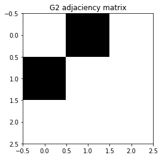
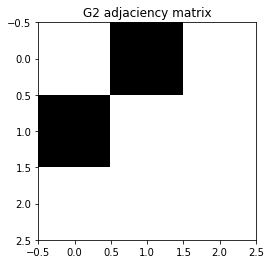
theta_kij = np.array([0.3, 0.2, 0.5]) ## Propagation parameters between regions
x0 = np.array([0.1, 0.6, 0.8]).reshape(Nbiom, 1) ## x0 - initial point (baseline values)
theta_vec = (theta_kij)
## Generate data 1 and plot
theta1 = (theta_vec, 3., 3., N_tot_parameters, G1, x0, 0)
dg1 = DataGenerator.DataGenerator(Nbiom, interval, theta1, Nsubs, propagation_model)
plt.figure()
dg1.plot(mode=1, save_fig = False)
[5, 6, 7, 8, 9, 10, 11, 12]
[5, 6, 7, 8, 9, 10, 11, 12]
[1, 2, 3, 4, 5, 6, 7, 8]
## Generate data 2 and plot
theta2 = (theta_vec, 3., 3., N_tot_parameters, G2, x0, 0)
dg2 = DataGenerator.DataGenerator(Nbiom, interval, theta2, Nsubs, propagation_model)
plt.figure()
dg2.plot(mode=1, save_fig = False)
[5, 6, 7, 8, 9, 10, 11, 12]
[1, 2, 3, 4, 5, 6, 7, 8]
[7, 8, 9, 10, 11, 12, 13, 14]
Changing number of markers, propagation parameters, etc¶
We can now play with the various parameters and see how the model behaves!
Nbiom = 5 # number of biomarkers - you can change it HERE
names_biomarkers = [str(i) for i in [j for j in range(1, Nbiom+1)]]
N_kij_parameters = int((int(Nbiom * Nbiom) - int(Nbiom)) / 2) # Numbers of parameters
N_tot_parameters = N_kij_parameters
# Generate random matrix G for diffusion between regions
G = DataGenerator.GenerateConnectome(Nbiom)
while np.max(np.max(G)) == 0:
G = DataGenerator.GenerateConnectome(Nbiom)
## Random propagation parameters between regions --> try varying the interval to [0, .1] HERE
theta_kij = np.random.uniform(0, .5, N_tot_parameters)
x0 = np.array(np.random.uniform(0, .5, Nbiom, )).reshape(Nbiom, 1) # Random x0 - initial point (baseline values)
## Plot the structure of the biomarkers' connections (adjaciency matrix)
plt.figure()
plt.title('G adjaciency matrix')
plt.imshow(G, cmap='Greys', interpolation='none')
<matplotlib.image.AxesImage at 0x7f1f55f33fd0>
## Generate the data
theta_vec = (theta_kij)
theta = (theta_vec, 3., 3., N_tot_parameters, G, x0, 0)
dg = DataGenerator.DataGenerator(Nbiom, interval, theta, Nsubs, propagation_model)
## And plot
plt.figure()
dg.plot(mode=1, save_fig = False)
[2, 3, 4, 5, 6, 7, 8, 9]
[3, 4, 5, 6, 7, 8, 9, 10]
[6, 7, 8, 9, 10, 11, 12, 13]
[3, 4, 5, 6, 7, 8, 9, 10]
[5, 6, 7, 8, 9, 10, 11, 12]
Changing the dynamical system¶
We have different propagation models we can We have implemented the Reaction-diffusion (RD) model:
This model includes a propagation and an aggregation mechanism and is comprised of two terms: a diffusion term for constant protein propagation and a reaction term for protein aggregation. This term eventually reaches a plateau when protein concentration get to a maximal concentration threshold \(\upsilon\).
And the Accumulation-Clearance-Propagation (ACP) model:
The ACP model describes the three processes of accumulation, clearance and propagation of proteins allowing for non–constant effects. The propagation term \(K_{{\theta}_{ACP}}\) is concentration–dependent: the toxic protein concentration in each region saturates when reaching a first critical threshold \(\gamma=(\gamma_1,...,\gamma_N)\), and subsequently triggers propagation towards the connected regions. Propagation also reaches a plateaus when passing a second critical threshold \(\eta=(\eta_1,...,\eta_N)\).
######### We can now experiment with the three propagation models: try changing
# - propagation_model
# - Nbiom
# - the various thresholds/propagation parameters:
# * diffusion: theta_kij
# * RD: upsilon_main, theta_kij
# * ACP: gamma_main, eta_main, theta_kij
# propagation_model = "diffusion"
#propagation_model = "ACP"
propagation_model = "reaction-diffusion"
Nbiom = 3
interval = [0, 20]
Nsubs = 50
names_biomarkers = [str(i) for i in [j for j in range(1, Nbiom + 1)]]
G = DataGenerator.GenerateConnectome(Nbiom)
while np.max(np.max(G)) == 0:
G = DataGenerator.GenerateConnectome(Nbiom)
if propagation_model == "ACP":
## Numbers of parameters
N_thres_parameters = 2 * Nbiom
N_kt_parameters = 1
N_kij_parameters = int((int(Nbiom * Nbiom) - int(Nbiom)) / 2)
N_tot_parameters = N_kij_parameters + N_kt_parameters + N_thres_parameters
gamma_main = 0.6 # Saturation and plateau regional thresholds: gamma and eta. Initialised as small variations around two main values
eta_main = 0.9
gamma = gamma_main + 0.2 * np.array(np.random.uniform(-1, 1, int(N_thres_parameters / 2), )).reshape(
int(N_thres_parameters / 2), 1)
eta = eta_main + + 0.2 * np.array(np.random.uniform(-1, 1, int(N_thres_parameters / 2), )).reshape(
int(N_thres_parameters / 2), 1)
theta_kij = np.random.uniform(0, .1, N_kij_parameters) # Propagation parameters between regions
kt = 0.2 # Initial trigger
x0 = np.array(np.random.uniform(0, 1, Nbiom, )).reshape(Nbiom, 1) # x0 - initial point for generation
theta_vec = (theta_kij, kt, eta, eta - gamma)
theta = (theta_vec, 3., 3., N_tot_parameters, G, x0, 0)
elif propagation_model == 'diffusion':
## Numbers of parameters
N_kij_parameters = int((int(Nbiom * Nbiom) - int(Nbiom)) / 2)
N_tot_parameters = N_kij_parameters
theta_kij = np.random.uniform(0, .05, N_tot_parameters) # Propagation parameters between regions
x0 = np.array(np.random.uniform(0, 1, Nbiom, )).reshape(Nbiom, 1) # x0 - initial point for generation
theta_vec = (theta_kij)
theta = (theta_vec, 3., 3., N_tot_parameters, G, x0, 0)
elif propagation_model == 'reaction-diffusion':
## Numbers of parameters
N_thres_parameters = Nbiom
N_kt_parameters = 1
N_kij_parameters = int((int(Nbiom * Nbiom) - int(Nbiom)) / 2)
N_tot_parameters = N_kij_parameters + N_kt_parameters + N_thres_parameters
upsilon_main = 2 # Plateau regional threshold: upsilon. Initialised as small variations around one main value
upsilon = upsilon_main + 0.2 * np.array(np.random.uniform(-1, 1, int(N_thres_parameters), )).reshape(
int(N_thres_parameters), 1)
theta_kij = np.random.uniform(0, .05, N_kij_parameters) # Propagation parameters between regions
kt = .2 # Total aggregation for the reaction term (which goes to plateau)
x0 = np.array(np.random.uniform(0, upsilon_main / 2, Nbiom, )).reshape(Nbiom, 1) # x0 - initial point for generation
theta_vec = (theta_kij, kt, upsilon)
theta = (theta_vec, 3., 3., N_tot_parameters, G, x0, 0)
## Generate data
dg = DataGenerator.DataGenerator(Nbiom, interval, theta, Nsubs, propagation_model)
## And plot
plt.figure()
DataGenerator.DataGenerator.plot(dg, mode=1, save_fig = False)
[13, 14, 15, 16, 17, 18, 19, 20, 21, 22, 23, 24, 25, 26, 27, 28, 29, 30, 31, 32]
[3, 4, 5, 6, 7, 8, 9, 10, 11, 12, 13, 14, 15, 16, 17, 18, 19, 20, 21, 22]
[11, 12, 13, 14, 15, 16, 17, 18, 19, 20, 21, 22, 23, 24, 25, 26, 27, 28, 29, 30]

Part III: run the optimizer¶
Let’s now actually run the optimiser!
Check how the framework performs in estimating
biomarkers trajectories
propagation parameters
from short–term data.
We go back to the 3 biomarkers and diffusion model scenario.
########### Generate data
propagation_model = "diffusion"
Nbiom = 3
interval = [0, 8]
Nsubs = 10
names_biomarkers = [str(i) for i in [j for j in range(1, Nbiom+1)]]
N_kij_parameters = int((int(Nbiom * Nbiom) - int(Nbiom)) / 2)
N_tot_parameters = N_kij_parameters
G = np.array([[0,1,1],[1,0,1],[1,1,0]]) # A <-> B <-> C
theta_kij = np.array([0.04, 0.03, 0.05])
x0 = np.array([0.1, 0.6, 0.8]).reshape(Nbiom, 1)
# Data generation
theta_vec = (theta_kij)
theta = (theta_vec, 3., 3., N_tot_parameters, G, x0, 0)
dg = DataGenerator.DataGenerator(Nbiom, interval, theta, Nsubs, propagation_model)
data = [dg, names_biomarkers, theta, 0, interval, propagation_model]
########### Optimization
torch.backends.cudnn.benchmark = True
torch.backends.cudnn.fastest = True
device = torch.device("cuda" if torch.cuda.is_available() else "cpu")
model = GP_progression_model.GP_Progression_Model(dg.ZeroXData, dg.YData, names_biomarkers = names_biomarkers,
monotonicity = np.ones(len(names_biomarkers)).tolist(), trade_off = 100,
propagation_model = propagation_model, normalization = 'time', connectome = G,
device = device)
model.model = model.model.to(device)
model.Optimize(N_outer_iterations = 6, N_tr_iterations = 200, N_ode_iterations= 2000, n_minibatch = 1,
verbose = True, plot = False, benchmark = True)
Optimization step: 1 out of 6
-- Regression --
Iteration 1 of 200 || Cost (DKL): 14.40 - Cost (fit): 157.17 - Cost (constr): 442.81|| Batch (each iter) of size 10 || Time (each iter): 0.02s
Iteration 50 of 200 || Cost (DKL): 16.58 - Cost (fit): 102.41 - Cost (constr): 158.71|| Batch (each iter) of size 10 || Time (each iter): 0.02s
Iteration 100 of 200 || Cost (DKL): 19.20 - Cost (fit): 114.18 - Cost (constr): 211.48|| Batch (each iter) of size 10 || Time (each iter): 0.02s
Iteration 150 of 200 || Cost (DKL): 19.17 - Cost (fit): 41.43 - Cost (constr): 9.05|| Batch (each iter) of size 10 || Time (each iter): 0.02s
Iteration 200 of 200 || Cost (DKL): 18.74 - Cost (fit): 85.75 - Cost (constr): 17.25|| Batch (each iter) of size 10 || Time (each iter): 0.02s
-- Time reparameterization --
Iteration 1 of 200 || Cost (DKL): 18.74 - Cost (fit): 39.74 - Cost (constr): 67.72|| Batch (each iter) of size 10 || Time (each iter): 0.02s
Iteration 50 of 200 || Cost (DKL): 18.74 - Cost (fit): 55.36 - Cost (constr): 76.03|| Batch (each iter) of size 10 || Time (each iter): 0.02s
Iteration 100 of 200 || Cost (DKL): 18.74 - Cost (fit): 55.47 - Cost (constr): 17.39|| Batch (each iter) of size 10 || Time (each iter): 0.02s
Iteration 150 of 200 || Cost (DKL): 18.74 - Cost (fit): 75.17 - Cost (constr): 93.23|| Batch (each iter) of size 10 || Time (each iter): 0.02s
Iteration 200 of 200 || Cost (DKL): 18.74 - Cost (fit): 49.47 - Cost (constr): 15.11|| Batch (each iter) of size 10 || Time (each iter): 0.02s
Optimization step: 2 out of 6
-- Regression --
Iteration 1 of 200 || Cost (DKL): 18.75 - Cost (fit): 55.86 - Cost (constr): 32.06|| Batch (each iter) of size 10 || Time (each iter): 0.02s
Iteration 50 of 200 || Cost (DKL): 19.06 - Cost (fit): 36.62 - Cost (constr): 8.99|| Batch (each iter) of size 10 || Time (each iter): 0.02s
Iteration 100 of 200 || Cost (DKL): 18.14 - Cost (fit): 63.35 - Cost (constr): 14.95|| Batch (each iter) of size 10 || Time (each iter): 0.02s
Iteration 150 of 200 || Cost (DKL): 16.86 - Cost (fit): 16.96 - Cost (constr): 23.36|| Batch (each iter) of size 10 || Time (each iter): 0.02s
Iteration 200 of 200 || Cost (DKL): 16.45 - Cost (fit): -0.42 - Cost (constr): 10.91|| Batch (each iter) of size 10 || Time (each iter): 0.02s
-- Time reparameterization --
Iteration 1 of 200 || Cost (DKL): 16.45 - Cost (fit): -2.25 - Cost (constr): 8.99|| Batch (each iter) of size 10 || Time (each iter): 0.02s
Iteration 50 of 200 || Cost (DKL): 16.45 - Cost (fit): 22.93 - Cost (constr): 15.86|| Batch (each iter) of size 10 || Time (each iter): 0.12s
Iteration 100 of 200 || Cost (DKL): 16.45 - Cost (fit): 13.78 - Cost (constr): 8.99|| Batch (each iter) of size 10 || Time (each iter): 0.02s
Iteration 150 of 200 || Cost (DKL): 16.45 - Cost (fit): -7.30 - Cost (constr): 8.99|| Batch (each iter) of size 10 || Time (each iter): 0.02s
Iteration 200 of 200 || Cost (DKL): 16.45 - Cost (fit): -5.51 - Cost (constr): 8.99|| Batch (each iter) of size 10 || Time (each iter): 0.02s
Optimization step: 3 out of 6
-- Regression --
Iteration 1 of 200 || Cost (DKL): 16.43 - Cost (fit): 4.42 - Cost (constr): 8.99|| Batch (each iter) of size 10 || Time (each iter): 0.02s
Iteration 50 of 200 || Cost (DKL): 15.01 - Cost (fit): 8.10 - Cost (constr): 34.74|| Batch (each iter) of size 10 || Time (each iter): 0.02s
Iteration 100 of 200 || Cost (DKL): 14.38 - Cost (fit): 9.69 - Cost (constr): 10.96|| Batch (each iter) of size 10 || Time (each iter): 0.02s
Iteration 150 of 200 || Cost (DKL): 14.36 - Cost (fit): 8.72 - Cost (constr): 8.99|| Batch (each iter) of size 10 || Time (each iter): 0.02s
Iteration 200 of 200 || Cost (DKL): 14.17 - Cost (fit): -51.90 - Cost (constr): 34.34|| Batch (each iter) of size 10 || Time (each iter): 0.02s
-- Time reparameterization --
Iteration 1 of 200 || Cost (DKL): 14.17 - Cost (fit): -50.54 - Cost (constr): 9.29|| Batch (each iter) of size 10 || Time (each iter): 0.02s
Iteration 50 of 200 || Cost (DKL): 14.17 - Cost (fit): -39.12 - Cost (constr): 8.99|| Batch (each iter) of size 10 || Time (each iter): 0.02s
Iteration 100 of 200 || Cost (DKL): 14.17 - Cost (fit): -48.53 - Cost (constr): 9.03|| Batch (each iter) of size 10 || Time (each iter): 0.02s
Iteration 150 of 200 || Cost (DKL): 14.17 - Cost (fit): -47.80 - Cost (constr): 13.72|| Batch (each iter) of size 10 || Time (each iter): 0.02s
Iteration 200 of 200 || Cost (DKL): 14.17 - Cost (fit): -36.25 - Cost (constr): 12.43|| Batch (each iter) of size 10 || Time (each iter): 0.02s
-- Propagation parameters optimization --
Iteration 1 of 2000 || Cost (DKL): 14.17 - Cost (fit): -16.18 - Cost (constr): 15.45|| Batch (each iter) of size 10 || Time (each iter): 0.02s
Iteration 50 of 2000 || Cost (DKL): 14.17 - Cost (fit): -45.20 - Cost (constr): 14.22|| Batch (each iter) of size 10 || Time (each iter): 0.02s
Iteration 100 of 2000 || Cost (DKL): 14.17 - Cost (fit): -41.65 - Cost (constr): 14.72|| Batch (each iter) of size 10 || Time (each iter): 0.01s
Iteration 150 of 2000 || Cost (DKL): 14.17 - Cost (fit): -18.69 - Cost (constr): 12.12|| Batch (each iter) of size 10 || Time (each iter): 0.01s
Iteration 200 of 2000 || Cost (DKL): 14.17 - Cost (fit): -32.17 - Cost (constr): 11.39|| Batch (each iter) of size 10 || Time (each iter): 0.01s
Iteration 250 of 2000 || Cost (DKL): 14.17 - Cost (fit): -48.93 - Cost (constr): 10.15|| Batch (each iter) of size 10 || Time (each iter): 0.01s
Iteration 300 of 2000 || Cost (DKL): 14.17 - Cost (fit): -35.49 - Cost (constr): 11.58|| Batch (each iter) of size 10 || Time (each iter): 0.02s
Iteration 350 of 2000 || Cost (DKL): 14.17 - Cost (fit): -39.64 - Cost (constr): 15.92|| Batch (each iter) of size 10 || Time (each iter): 0.01s
Iteration 400 of 2000 || Cost (DKL): 14.17 - Cost (fit): -44.02 - Cost (constr): 17.16|| Batch (each iter) of size 10 || Time (each iter): 0.01s
Iteration 450 of 2000 || Cost (DKL): 14.17 - Cost (fit): -56.36 - Cost (constr): 10.54|| Batch (each iter) of size 10 || Time (each iter): 0.01s
Iteration 500 of 2000 || Cost (DKL): 14.17 - Cost (fit): -37.23 - Cost (constr): 10.12|| Batch (each iter) of size 10 || Time (each iter): 0.01s
Iteration 550 of 2000 || Cost (DKL): 14.17 - Cost (fit): -38.01 - Cost (constr): 11.91|| Batch (each iter) of size 10 || Time (each iter): 0.01s
Iteration 600 of 2000 || Cost (DKL): 14.17 - Cost (fit): -46.22 - Cost (constr): 10.67|| Batch (each iter) of size 10 || Time (each iter): 0.01s
Iteration 650 of 2000 || Cost (DKL): 14.17 - Cost (fit): -51.99 - Cost (constr): 8.01|| Batch (each iter) of size 10 || Time (each iter): 0.02s
Iteration 700 of 2000 || Cost (DKL): 14.17 - Cost (fit): -50.89 - Cost (constr): 9.94|| Batch (each iter) of size 10 || Time (each iter): 0.02s
Iteration 750 of 2000 || Cost (DKL): 14.17 - Cost (fit): -34.37 - Cost (constr): 10.80|| Batch (each iter) of size 10 || Time (each iter): 0.01s
Iteration 800 of 2000 || Cost (DKL): 14.17 - Cost (fit): -36.50 - Cost (constr): 11.17|| Batch (each iter) of size 10 || Time (each iter): 0.02s
Iteration 850 of 2000 || Cost (DKL): 14.17 - Cost (fit): 8.47 - Cost (constr): 13.56|| Batch (each iter) of size 10 || Time (each iter): 0.01s
Iteration 900 of 2000 || Cost (DKL): 14.17 - Cost (fit): -17.31 - Cost (constr): 8.70|| Batch (each iter) of size 10 || Time (each iter): 0.01s
Iteration 950 of 2000 || Cost (DKL): 14.17 - Cost (fit): -53.20 - Cost (constr): 10.44|| Batch (each iter) of size 10 || Time (each iter): 0.01s
Iteration 1000 of 2000 || Cost (DKL): 14.17 - Cost (fit): -52.95 - Cost (constr): 9.51|| Batch (each iter) of size 10 || Time (each iter): 0.01s
Iteration 1050 of 2000 || Cost (DKL): 14.17 - Cost (fit): -46.87 - Cost (constr): 10.57|| Batch (each iter) of size 10 || Time (each iter): 0.01s
Iteration 1100 of 2000 || Cost (DKL): 14.17 - Cost (fit): -31.15 - Cost (constr): 9.99|| Batch (each iter) of size 10 || Time (each iter): 0.01s
Iteration 1150 of 2000 || Cost (DKL): 14.17 - Cost (fit): -54.30 - Cost (constr): 9.10|| Batch (each iter) of size 10 || Time (each iter): 0.02s
Iteration 1200 of 2000 || Cost (DKL): 14.17 - Cost (fit): -48.10 - Cost (constr): 10.71|| Batch (each iter) of size 10 || Time (each iter): 0.01s
Iteration 1250 of 2000 || Cost (DKL): 14.17 - Cost (fit): -55.65 - Cost (constr): 8.96|| Batch (each iter) of size 10 || Time (each iter): 0.01s
Iteration 1300 of 2000 || Cost (DKL): 14.17 - Cost (fit): -13.26 - Cost (constr): 9.53|| Batch (each iter) of size 10 || Time (each iter): 0.01s
Iteration 1350 of 2000 || Cost (DKL): 14.17 - Cost (fit): -33.53 - Cost (constr): 9.60|| Batch (each iter) of size 10 || Time (each iter): 0.01s
Iteration 1400 of 2000 || Cost (DKL): 14.17 - Cost (fit): -38.62 - Cost (constr): 11.11|| Batch (each iter) of size 10 || Time (each iter): 0.01s
Iteration 1450 of 2000 || Cost (DKL): 14.17 - Cost (fit): -58.16 - Cost (constr): 9.20|| Batch (each iter) of size 10 || Time (each iter): 0.02s
Iteration 1500 of 2000 || Cost (DKL): 14.17 - Cost (fit): -21.89 - Cost (constr): 9.05|| Batch (each iter) of size 10 || Time (each iter): 0.01s
Iteration 1550 of 2000 || Cost (DKL): 14.17 - Cost (fit): -44.40 - Cost (constr): 10.24|| Batch (each iter) of size 10 || Time (each iter): 0.01s
Iteration 1600 of 2000 || Cost (DKL): 14.17 - Cost (fit): 13.65 - Cost (constr): 8.39|| Batch (each iter) of size 10 || Time (each iter): 0.01s
Iteration 1650 of 2000 || Cost (DKL): 14.17 - Cost (fit): -31.80 - Cost (constr): 9.81|| Batch (each iter) of size 10 || Time (each iter): 0.02s
Iteration 1700 of 2000 || Cost (DKL): 14.17 - Cost (fit): -57.78 - Cost (constr): 8.94|| Batch (each iter) of size 10 || Time (each iter): 0.01s
Iteration 1750 of 2000 || Cost (DKL): 14.17 - Cost (fit): -46.39 - Cost (constr): 9.78|| Batch (each iter) of size 10 || Time (each iter): 0.01s
Iteration 1800 of 2000 || Cost (DKL): 14.17 - Cost (fit): -32.14 - Cost (constr): 9.01|| Batch (each iter) of size 10 || Time (each iter): 0.02s
Iteration 1850 of 2000 || Cost (DKL): 14.17 - Cost (fit): -34.73 - Cost (constr): 9.29|| Batch (each iter) of size 10 || Time (each iter): 0.01s
Iteration 1900 of 2000 || Cost (DKL): 14.17 - Cost (fit): -47.87 - Cost (constr): 9.29|| Batch (each iter) of size 10 || Time (each iter): 0.01s
Iteration 1950 of 2000 || Cost (DKL): 14.17 - Cost (fit): -39.30 - Cost (constr): 9.49|| Batch (each iter) of size 10 || Time (each iter): 0.01s
Iteration 2000 of 2000 || Cost (DKL): 14.17 - Cost (fit): -50.33 - Cost (constr): 8.87|| Batch (each iter) of size 10 || Time (each iter): 0.01s
Optimization step: 4 out of 6
-- Regression --
Iteration 1 of 200 || Cost (DKL): 14.17 - Cost (fit): -14.46 - Cost (constr): 9.05|| Batch (each iter) of size 10 || Time (each iter): 0.02s
Iteration 50 of 200 || Cost (DKL): 13.90 - Cost (fit): 1.00 - Cost (constr): 8.99|| Batch (each iter) of size 10 || Time (each iter): 0.02s
Iteration 100 of 200 || Cost (DKL): 13.25 - Cost (fit): -47.16 - Cost (constr): 9.75|| Batch (each iter) of size 10 || Time (each iter): 0.02s
Iteration 150 of 200 || Cost (DKL): 13.62 - Cost (fit): -91.03 - Cost (constr): 15.04|| Batch (each iter) of size 10 || Time (each iter): 0.02s
Iteration 200 of 200 || Cost (DKL): 14.06 - Cost (fit): -70.81 - Cost (constr): 9.05|| Batch (each iter) of size 10 || Time (each iter): 0.02s
-- Time reparameterization --
Iteration 1 of 200 || Cost (DKL): 14.06 - Cost (fit): -64.16 - Cost (constr): 19.53|| Batch (each iter) of size 10 || Time (each iter): 0.02s
Iteration 50 of 200 || Cost (DKL): 14.06 - Cost (fit): -68.76 - Cost (constr): 9.06|| Batch (each iter) of size 10 || Time (each iter): 0.02s
Iteration 100 of 200 || Cost (DKL): 14.06 - Cost (fit): -73.44 - Cost (constr): 15.47|| Batch (each iter) of size 10 || Time (each iter): 0.02s
Iteration 150 of 200 || Cost (DKL): 14.06 - Cost (fit): -85.34 - Cost (constr): 9.88|| Batch (each iter) of size 10 || Time (each iter): 0.02s
Iteration 200 of 200 || Cost (DKL): 14.06 - Cost (fit): -92.07 - Cost (constr): 15.71|| Batch (each iter) of size 10 || Time (each iter): 0.02s
-- Propagation parameters optimization --
Iteration 1 of 2000 || Cost (DKL): 14.06 - Cost (fit): -53.11 - Cost (constr): 8.44|| Batch (each iter) of size 10 || Time (each iter): 0.01s
Iteration 50 of 2000 || Cost (DKL): 14.06 - Cost (fit): -90.18 - Cost (constr): 9.30|| Batch (each iter) of size 10 || Time (each iter): 0.01s
Iteration 100 of 2000 || Cost (DKL): 14.06 - Cost (fit): -88.41 - Cost (constr): 8.67|| Batch (each iter) of size 10 || Time (each iter): 0.01s
Iteration 150 of 2000 || Cost (DKL): 14.06 - Cost (fit): -59.91 - Cost (constr): 9.23|| Batch (each iter) of size 10 || Time (each iter): 0.02s
Iteration 200 of 2000 || Cost (DKL): 14.06 - Cost (fit): -86.86 - Cost (constr): 8.21|| Batch (each iter) of size 10 || Time (each iter): 0.01s
Iteration 250 of 2000 || Cost (DKL): 14.06 - Cost (fit): -100.33 - Cost (constr): 8.82|| Batch (each iter) of size 10 || Time (each iter): 0.02s
Iteration 300 of 2000 || Cost (DKL): 14.06 - Cost (fit): -91.39 - Cost (constr): 8.75|| Batch (each iter) of size 10 || Time (each iter): 0.01s
Iteration 350 of 2000 || Cost (DKL): 14.06 - Cost (fit): -22.32 - Cost (constr): 8.99|| Batch (each iter) of size 10 || Time (each iter): 0.02s
Iteration 400 of 2000 || Cost (DKL): 14.06 - Cost (fit): -52.60 - Cost (constr): 9.29|| Batch (each iter) of size 10 || Time (each iter): 0.01s
Iteration 450 of 2000 || Cost (DKL): 14.06 - Cost (fit): -27.62 - Cost (constr): 8.49|| Batch (each iter) of size 10 || Time (each iter): 0.01s
Iteration 500 of 2000 || Cost (DKL): 14.06 - Cost (fit): -85.97 - Cost (constr): 8.26|| Batch (each iter) of size 10 || Time (each iter): 0.01s
Iteration 550 of 2000 || Cost (DKL): 14.06 - Cost (fit): -84.15 - Cost (constr): 9.06|| Batch (each iter) of size 10 || Time (each iter): 0.01s
Iteration 600 of 2000 || Cost (DKL): 14.06 - Cost (fit): -64.31 - Cost (constr): 8.69|| Batch (each iter) of size 10 || Time (each iter): 0.02s
Iteration 650 of 2000 || Cost (DKL): 14.06 - Cost (fit): -16.70 - Cost (constr): 8.52|| Batch (each iter) of size 10 || Time (each iter): 0.02s
Iteration 700 of 2000 || Cost (DKL): 14.06 - Cost (fit): -80.45 - Cost (constr): 8.87|| Batch (each iter) of size 10 || Time (each iter): 0.01s
Iteration 750 of 2000 || Cost (DKL): 14.06 - Cost (fit): -54.94 - Cost (constr): 8.66|| Batch (each iter) of size 10 || Time (each iter): 0.01s
Iteration 800 of 2000 || Cost (DKL): 14.06 - Cost (fit): -26.42 - Cost (constr): 8.79|| Batch (each iter) of size 10 || Time (each iter): 0.01s
Iteration 850 of 2000 || Cost (DKL): 14.06 - Cost (fit): -91.12 - Cost (constr): 8.27|| Batch (each iter) of size 10 || Time (each iter): 0.02s
Iteration 900 of 2000 || Cost (DKL): 14.06 - Cost (fit): -85.24 - Cost (constr): 8.70|| Batch (each iter) of size 10 || Time (each iter): 0.01s
Iteration 950 of 2000 || Cost (DKL): 14.06 - Cost (fit): -101.99 - Cost (constr): 8.07|| Batch (each iter) of size 10 || Time (each iter): 0.02s
Iteration 1000 of 2000 || Cost (DKL): 14.06 - Cost (fit): -98.10 - Cost (constr): 8.62|| Batch (each iter) of size 10 || Time (each iter): 0.01s
Iteration 1050 of 2000 || Cost (DKL): 14.06 - Cost (fit): -94.22 - Cost (constr): 8.34|| Batch (each iter) of size 10 || Time (each iter): 0.01s
Iteration 1100 of 2000 || Cost (DKL): 14.06 - Cost (fit): -27.44 - Cost (constr): 8.96|| Batch (each iter) of size 10 || Time (each iter): 0.01s
Iteration 1150 of 2000 || Cost (DKL): 14.06 - Cost (fit): -74.95 - Cost (constr): 8.90|| Batch (each iter) of size 10 || Time (each iter): 0.01s
Iteration 1200 of 2000 || Cost (DKL): 14.06 - Cost (fit): -58.89 - Cost (constr): 7.98|| Batch (each iter) of size 10 || Time (each iter): 0.02s
Iteration 1250 of 2000 || Cost (DKL): 14.06 - Cost (fit): -104.14 - Cost (constr): 8.25|| Batch (each iter) of size 10 || Time (each iter): 0.01s
Iteration 1300 of 2000 || Cost (DKL): 14.06 - Cost (fit): -61.97 - Cost (constr): 8.91|| Batch (each iter) of size 10 || Time (each iter): 0.01s
Iteration 1350 of 2000 || Cost (DKL): 14.06 - Cost (fit): -82.79 - Cost (constr): 8.90|| Batch (each iter) of size 10 || Time (each iter): 0.01s
Iteration 1400 of 2000 || Cost (DKL): 14.06 - Cost (fit): -43.94 - Cost (constr): 8.90|| Batch (each iter) of size 10 || Time (each iter): 0.02s
Iteration 1450 of 2000 || Cost (DKL): 14.06 - Cost (fit): -78.24 - Cost (constr): 9.11|| Batch (each iter) of size 10 || Time (each iter): 0.01s
Iteration 1500 of 2000 || Cost (DKL): 14.06 - Cost (fit): -99.89 - Cost (constr): 8.97|| Batch (each iter) of size 10 || Time (each iter): 0.01s
Iteration 1550 of 2000 || Cost (DKL): 14.06 - Cost (fit): -79.31 - Cost (constr): 9.91|| Batch (each iter) of size 10 || Time (each iter): 0.02s
Iteration 1600 of 2000 || Cost (DKL): 14.06 - Cost (fit): -88.86 - Cost (constr): 8.08|| Batch (each iter) of size 10 || Time (each iter): 0.01s
Iteration 1650 of 2000 || Cost (DKL): 14.06 - Cost (fit): -48.82 - Cost (constr): 9.42|| Batch (each iter) of size 10 || Time (each iter): 0.02s
Iteration 1700 of 2000 || Cost (DKL): 14.06 - Cost (fit): -98.70 - Cost (constr): 8.19|| Batch (each iter) of size 10 || Time (each iter): 0.01s
Iteration 1750 of 2000 || Cost (DKL): 14.06 - Cost (fit): -79.09 - Cost (constr): 9.00|| Batch (each iter) of size 10 || Time (each iter): 0.02s
Iteration 1800 of 2000 || Cost (DKL): 14.06 - Cost (fit): -76.23 - Cost (constr): 8.52|| Batch (each iter) of size 10 || Time (each iter): 0.01s
Iteration 1850 of 2000 || Cost (DKL): 14.06 - Cost (fit): -84.69 - Cost (constr): 9.00|| Batch (each iter) of size 10 || Time (each iter): 0.01s
Iteration 1900 of 2000 || Cost (DKL): 14.06 - Cost (fit): -59.57 - Cost (constr): 8.28|| Batch (each iter) of size 10 || Time (each iter): 0.01s
Iteration 1950 of 2000 || Cost (DKL): 14.06 - Cost (fit): 23.51 - Cost (constr): 8.46|| Batch (each iter) of size 10 || Time (each iter): 0.01s
Iteration 2000 of 2000 || Cost (DKL): 14.06 - Cost (fit): -91.89 - Cost (constr): 8.40|| Batch (each iter) of size 10 || Time (each iter): 0.01s
Optimization step: 5 out of 6
-- Regression --
Iteration 1 of 200 || Cost (DKL): 14.04 - Cost (fit): -83.53 - Cost (constr): 8.99|| Batch (each iter) of size 10 || Time (each iter): 0.02s
Iteration 50 of 200 || Cost (DKL): 13.92 - Cost (fit): -104.90 - Cost (constr): 20.13|| Batch (each iter) of size 10 || Time (each iter): 0.02s
Iteration 100 of 200 || Cost (DKL): 14.22 - Cost (fit): -108.35 - Cost (constr): 10.12|| Batch (each iter) of size 10 || Time (each iter): 0.02s
Iteration 150 of 200 || Cost (DKL): 15.11 - Cost (fit): -104.32 - Cost (constr): 14.90|| Batch (each iter) of size 10 || Time (each iter): 0.02s
Iteration 200 of 200 || Cost (DKL): 15.70 - Cost (fit): -118.90 - Cost (constr): 9.01|| Batch (each iter) of size 10 || Time (each iter): 0.02s
-- Time reparameterization --
Iteration 1 of 200 || Cost (DKL): 15.70 - Cost (fit): -103.39 - Cost (constr): 8.99|| Batch (each iter) of size 10 || Time (each iter): 0.02s
Iteration 50 of 200 || Cost (DKL): 15.70 - Cost (fit): -135.33 - Cost (constr): 8.99|| Batch (each iter) of size 10 || Time (each iter): 0.02s
Iteration 100 of 200 || Cost (DKL): 15.70 - Cost (fit): -88.79 - Cost (constr): 9.01|| Batch (each iter) of size 10 || Time (each iter): 0.02s
Iteration 150 of 200 || Cost (DKL): 15.70 - Cost (fit): -114.04 - Cost (constr): 9.00|| Batch (each iter) of size 10 || Time (each iter): 0.02s
Iteration 200 of 200 || Cost (DKL): 15.70 - Cost (fit): -80.86 - Cost (constr): 8.99|| Batch (each iter) of size 10 || Time (each iter): 0.02s
-- Propagation parameters optimization --
Iteration 1 of 2000 || Cost (DKL): 15.70 - Cost (fit): -133.59 - Cost (constr): 8.12|| Batch (each iter) of size 10 || Time (each iter): 0.01s
Iteration 50 of 2000 || Cost (DKL): 15.70 - Cost (fit): -109.00 - Cost (constr): 8.09|| Batch (each iter) of size 10 || Time (each iter): 0.01s
Iteration 100 of 2000 || Cost (DKL): 15.70 - Cost (fit): -120.74 - Cost (constr): 8.05|| Batch (each iter) of size 10 || Time (each iter): 0.01s
Iteration 150 of 2000 || Cost (DKL): 15.70 - Cost (fit): -133.47 - Cost (constr): 7.99|| Batch (each iter) of size 10 || Time (each iter): 0.01s
Iteration 200 of 2000 || Cost (DKL): 15.70 - Cost (fit): -121.66 - Cost (constr): 8.15|| Batch (each iter) of size 10 || Time (each iter): 0.01s
Iteration 250 of 2000 || Cost (DKL): 15.70 - Cost (fit): -134.63 - Cost (constr): 8.12|| Batch (each iter) of size 10 || Time (each iter): 0.01s
Iteration 300 of 2000 || Cost (DKL): 15.70 - Cost (fit): -125.88 - Cost (constr): 7.80|| Batch (each iter) of size 10 || Time (each iter): 0.01s
Iteration 350 of 2000 || Cost (DKL): 15.70 - Cost (fit): -110.13 - Cost (constr): 8.39|| Batch (each iter) of size 10 || Time (each iter): 0.01s
Iteration 400 of 2000 || Cost (DKL): 15.70 - Cost (fit): -105.05 - Cost (constr): 8.21|| Batch (each iter) of size 10 || Time (each iter): 0.01s
Iteration 450 of 2000 || Cost (DKL): 15.70 - Cost (fit): -82.62 - Cost (constr): 7.82|| Batch (each iter) of size 10 || Time (each iter): 0.01s
Iteration 500 of 2000 || Cost (DKL): 15.70 - Cost (fit): -140.97 - Cost (constr): 7.83|| Batch (each iter) of size 10 || Time (each iter): 0.02s
Iteration 550 of 2000 || Cost (DKL): 15.70 - Cost (fit): 14.09 - Cost (constr): 8.63|| Batch (each iter) of size 10 || Time (each iter): 0.02s
Iteration 600 of 2000 || Cost (DKL): 15.70 - Cost (fit): -126.44 - Cost (constr): 7.85|| Batch (each iter) of size 10 || Time (each iter): 0.01s
Iteration 650 of 2000 || Cost (DKL): 15.70 - Cost (fit): -53.14 - Cost (constr): 8.28|| Batch (each iter) of size 10 || Time (each iter): 0.01s
Iteration 700 of 2000 || Cost (DKL): 15.70 - Cost (fit): -121.84 - Cost (constr): 7.82|| Batch (each iter) of size 10 || Time (each iter): 0.02s
Iteration 750 of 2000 || Cost (DKL): 15.70 - Cost (fit): -135.66 - Cost (constr): 7.97|| Batch (each iter) of size 10 || Time (each iter): 0.01s
Iteration 800 of 2000 || Cost (DKL): 15.70 - Cost (fit): -117.08 - Cost (constr): 7.77|| Batch (each iter) of size 10 || Time (each iter): 0.02s
Iteration 850 of 2000 || Cost (DKL): 15.70 - Cost (fit): -103.65 - Cost (constr): 8.29|| Batch (each iter) of size 10 || Time (each iter): 0.01s
Iteration 900 of 2000 || Cost (DKL): 15.70 - Cost (fit): -120.10 - Cost (constr): 7.98|| Batch (each iter) of size 10 || Time (each iter): 0.01s
Iteration 950 of 2000 || Cost (DKL): 15.70 - Cost (fit): -124.46 - Cost (constr): 8.03|| Batch (each iter) of size 10 || Time (each iter): 0.02s
Iteration 1000 of 2000 || Cost (DKL): 15.70 - Cost (fit): -130.72 - Cost (constr): 8.29|| Batch (each iter) of size 10 || Time (each iter): 0.01s
Iteration 1050 of 2000 || Cost (DKL): 15.70 - Cost (fit): -140.00 - Cost (constr): 8.53|| Batch (each iter) of size 10 || Time (each iter): 0.01s
Iteration 1100 of 2000 || Cost (DKL): 15.70 - Cost (fit): -113.81 - Cost (constr): 7.77|| Batch (each iter) of size 10 || Time (each iter): 0.01s
Iteration 1150 of 2000 || Cost (DKL): 15.70 - Cost (fit): -128.00 - Cost (constr): 7.71|| Batch (each iter) of size 10 || Time (each iter): 0.01s
Iteration 1200 of 2000 || Cost (DKL): 15.70 - Cost (fit): -126.22 - Cost (constr): 7.76|| Batch (each iter) of size 10 || Time (each iter): 0.01s
Iteration 1250 of 2000 || Cost (DKL): 15.70 - Cost (fit): -69.09 - Cost (constr): 8.43|| Batch (each iter) of size 10 || Time (each iter): 0.01s
Iteration 1300 of 2000 || Cost (DKL): 15.70 - Cost (fit): -125.51 - Cost (constr): 7.66|| Batch (each iter) of size 10 || Time (each iter): 0.02s
Iteration 1350 of 2000 || Cost (DKL): 15.70 - Cost (fit): -130.76 - Cost (constr): 8.08|| Batch (each iter) of size 10 || Time (each iter): 0.01s
Iteration 1400 of 2000 || Cost (DKL): 15.70 - Cost (fit): -75.56 - Cost (constr): 7.98|| Batch (each iter) of size 10 || Time (each iter): 0.02s
Iteration 1450 of 2000 || Cost (DKL): 15.70 - Cost (fit): -117.27 - Cost (constr): 7.40|| Batch (each iter) of size 10 || Time (each iter): 0.01s
Iteration 1500 of 2000 || Cost (DKL): 15.70 - Cost (fit): -129.30 - Cost (constr): 8.41|| Batch (each iter) of size 10 || Time (each iter): 0.01s
Iteration 1550 of 2000 || Cost (DKL): 15.70 - Cost (fit): -127.52 - Cost (constr): 7.96|| Batch (each iter) of size 10 || Time (each iter): 0.01s
Iteration 1600 of 2000 || Cost (DKL): 15.70 - Cost (fit): -125.49 - Cost (constr): 8.52|| Batch (each iter) of size 10 || Time (each iter): 0.01s
Iteration 1650 of 2000 || Cost (DKL): 15.70 - Cost (fit): -60.54 - Cost (constr): 7.78|| Batch (each iter) of size 10 || Time (each iter): 0.02s
Iteration 1700 of 2000 || Cost (DKL): 15.70 - Cost (fit): -84.90 - Cost (constr): 8.08|| Batch (each iter) of size 10 || Time (each iter): 0.01s
Iteration 1750 of 2000 || Cost (DKL): 15.70 - Cost (fit): -110.52 - Cost (constr): 8.15|| Batch (each iter) of size 10 || Time (each iter): 0.01s
Iteration 1800 of 2000 || Cost (DKL): 15.70 - Cost (fit): -121.55 - Cost (constr): 8.14|| Batch (each iter) of size 10 || Time (each iter): 0.01s
Iteration 1850 of 2000 || Cost (DKL): 15.70 - Cost (fit): -122.49 - Cost (constr): 8.72|| Batch (each iter) of size 10 || Time (each iter): 0.02s
Iteration 1900 of 2000 || Cost (DKL): 15.70 - Cost (fit): -60.55 - Cost (constr): 7.62|| Batch (each iter) of size 10 || Time (each iter): 0.02s
Iteration 1950 of 2000 || Cost (DKL): 15.70 - Cost (fit): -93.52 - Cost (constr): 7.75|| Batch (each iter) of size 10 || Time (each iter): 0.01s
Iteration 2000 of 2000 || Cost (DKL): 15.70 - Cost (fit): -141.53 - Cost (constr): 7.90|| Batch (each iter) of size 10 || Time (each iter): 0.01s
Optimization step: 6 out of 6
-- Regression --
Iteration 1 of 200 || Cost (DKL): 15.65 - Cost (fit): -71.92 - Cost (constr): 9.02|| Batch (each iter) of size 10 || Time (each iter): 0.02s
Iteration 50 of 200 || Cost (DKL): 16.20 - Cost (fit): -54.20 - Cost (constr): 9.17|| Batch (each iter) of size 10 || Time (each iter): 0.02s
Iteration 100 of 200 || Cost (DKL): 17.30 - Cost (fit): -140.24 - Cost (constr): 8.99|| Batch (each iter) of size 10 || Time (each iter): 0.02s
Iteration 150 of 200 || Cost (DKL): 17.56 - Cost (fit): -91.87 - Cost (constr): 9.06|| Batch (each iter) of size 10 || Time (each iter): 0.02s
Iteration 200 of 200 || Cost (DKL): 18.50 - Cost (fit): -164.45 - Cost (constr): 9.02|| Batch (each iter) of size 10 || Time (each iter): 0.02s
-- Time reparameterization --
Iteration 1 of 200 || Cost (DKL): 18.50 - Cost (fit): -115.53 - Cost (constr): 8.99|| Batch (each iter) of size 10 || Time (each iter): 0.02s
Iteration 50 of 200 || Cost (DKL): 18.50 - Cost (fit): -104.63 - Cost (constr): 8.99|| Batch (each iter) of size 10 || Time (each iter): 0.02s
Iteration 100 of 200 || Cost (DKL): 18.50 - Cost (fit): -160.81 - Cost (constr): 8.99|| Batch (each iter) of size 10 || Time (each iter): 0.02s
Iteration 150 of 200 || Cost (DKL): 18.50 - Cost (fit): -167.23 - Cost (constr): 8.99|| Batch (each iter) of size 10 || Time (each iter): 0.02s
Iteration 200 of 200 || Cost (DKL): 18.50 - Cost (fit): -113.86 - Cost (constr): 8.99|| Batch (each iter) of size 10 || Time (each iter): 0.02s
Optimization step: 6 out of 6
-- Regression --
Iteration 1 of 200 || Cost (DKL): 18.47 - Cost (fit): -159.05 - Cost (constr): 9.06|| Batch (each iter) of size 10 || Time (each iter): 0.02s
Iteration 50 of 200 || Cost (DKL): 19.22 - Cost (fit): -155.02 - Cost (constr): 9.47|| Batch (each iter) of size 10 || Time (each iter): 0.02s
Iteration 100 of 200 || Cost (DKL): 21.01 - Cost (fit): -124.63 - Cost (constr): 9.15|| Batch (each iter) of size 10 || Time (each iter): 0.02s
Iteration 150 of 200 || Cost (DKL): 22.81 - Cost (fit): -128.64 - Cost (constr): 9.05|| Batch (each iter) of size 10 || Time (each iter): 0.02s
Iteration 200 of 200 || Cost (DKL): 23.23 - Cost (fit): -157.34 - Cost (constr): 8.99|| Batch (each iter) of size 10 || Time (each iter): 0.02s
### Let's now plot some results
## Here we plot the estimated GPs
model.Plot_GPs(subject = False, just_subplot = False, save_fig = False)
# and compare with the simulated data
plt.figure()
dg.plot(mode=1, save_fig = False)
## Plot the estimated propagation parameters and compare with ground truth values
model.Plot_kij(save_fig=False, synthetic = theta)

[7, 8, 9, 10, 11, 12, 13, 14]
[0, 1, 2, 3, 4, 5, 6, 7]
[5, 6, 7, 8, 9, 10, 11, 12]


Part IV: application to amyloid spread on ADNI data¶
Of course we can way more, plot-wise!
Let’s have a look at it, but on real ADNI /amyloid data, so that we can gather some biological insights.
Specifically:
we use the ACP model (which is the most complete, accounts for the processes of accumulation, clearance, propagation etc);
the substrate along which propagation occurs is the structural connectome derived from diffusion MRI data;
we analyze AV45–PET brain imaging data of 770 subjects from ADNI, with a total of 1477 longitudinal data points.
The data¶
The model is pre-trained so now we play on data visualisation.
Quick info on the data we used

Set up¶
import GP_progression_model
import sys
from sys import platform as sys_pf
from GP_progression_model import DataGenerator
import numpy as np
import torch
import matplotlib
if sys_pf == 'darwin':
matplotlib.use("TkAgg")
import matplotlib as mpl
import matplotlib.pyplot as plt
from matplotlib.colors import colorConverter
from numpy import genfromtxt
import pandas as pd
import requests
sys.path.append('../../')
torch.backends.cudnn.benchmark = True
torch.backends.cudnn.fastest = True
device = torch.device("cuda" if torch.cuda.is_available() else "cpu")
# load pre-trained data
dat = 'http://sgarbarino.github.io/tutorial/ADNI_processed.dat'
r = requests.get(dat)
open('data.dat', 'wb').write(r.content)
data = torch.load('data.dat')
model = data[0]
Visualisation¶
## Plot estimated biomarker trajectories together with subjects, which have been shifted according to the time reparametrization
model.Plot_GPs(subject = True, save_fig = False)
 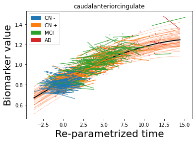
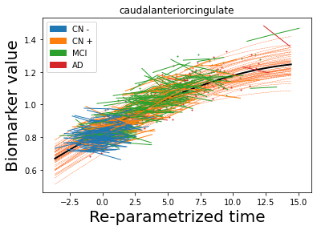
 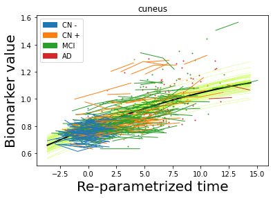
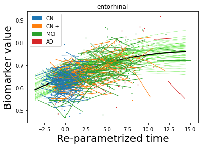
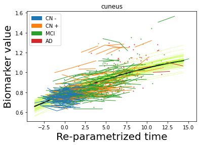
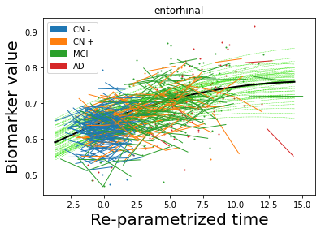
 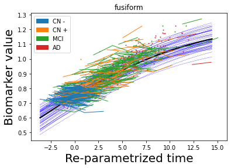
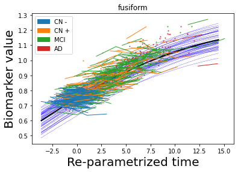
 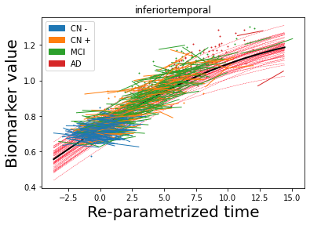
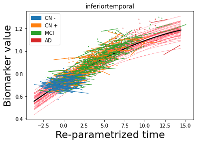
 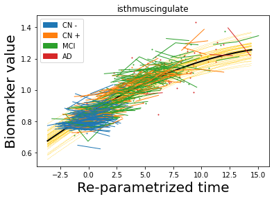
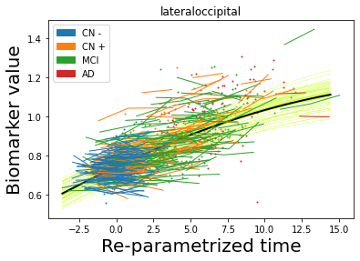
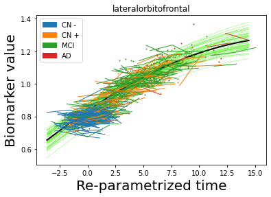
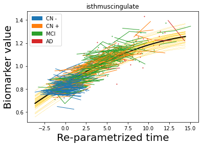
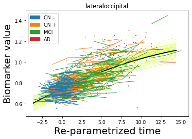
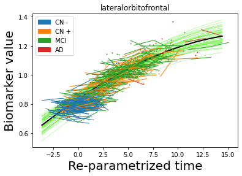


 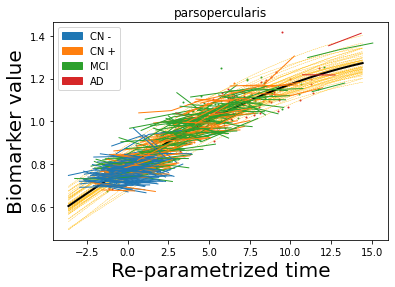
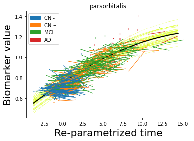
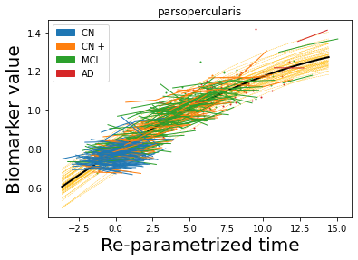
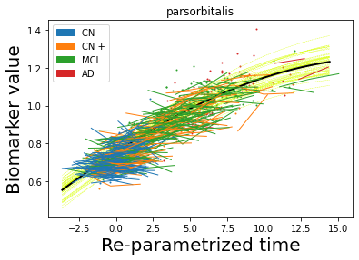
 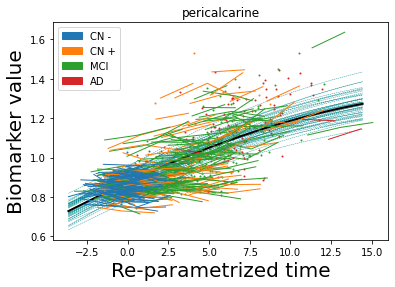
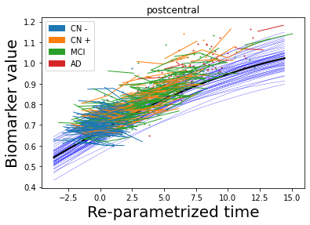
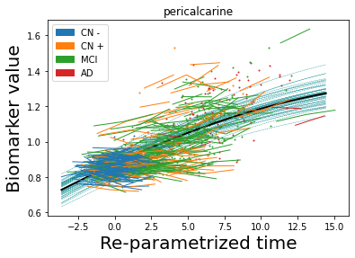
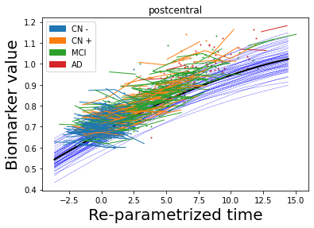
 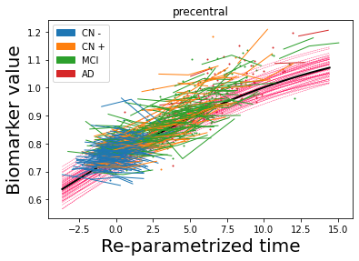
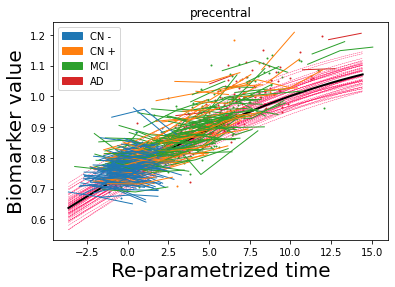


 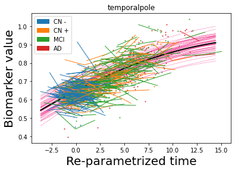
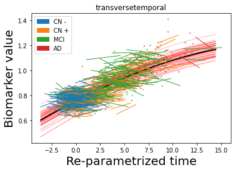
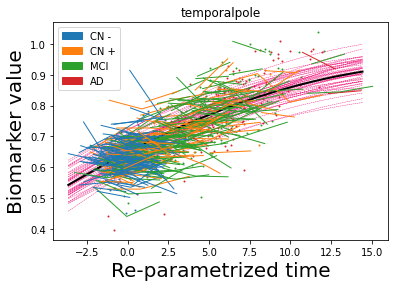
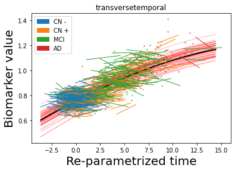
 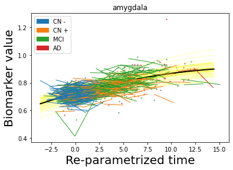
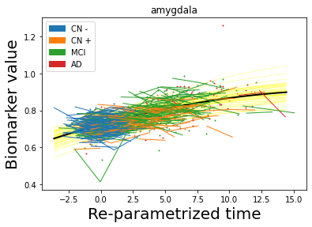


 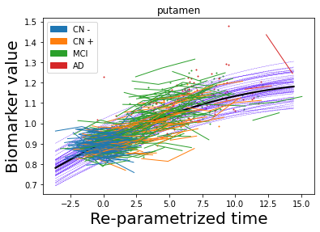
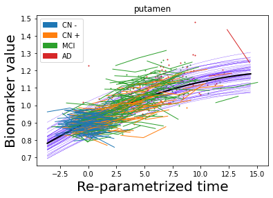
 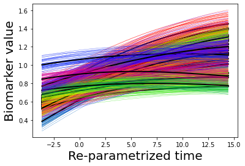
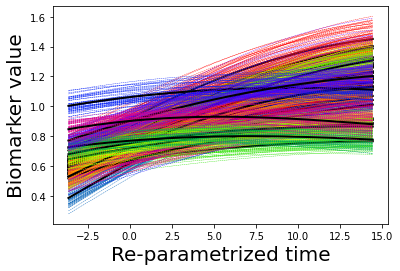
## Plot diagnostic separation of subjects according to time-shift
time = model.Return_time_parameters()
list_biomarker = data[2]
group = data[3]
df = pd.DataFrame({"class": group, "vals": time})
fig, ax = plt.subplots(figsize=(8, 6))
for label, df in df.groupby('class'):
df.vals.plot(kind="kde", ax=ax, label=model.group_name[label], fontsize=12)
plt.legend(fontsize=24)
plt.tick_params(labelsize=20)
plt.show()
## Visualise propagation parameters along the connections over time, on three specific regions of interest
x_range = data[5]
x_mean_std = data[6]
mean_norm = data[8]
coordinates = data[10]
gamma = data[11]
eta = data[12]
kij = data[13]
idx_biom_selected = [25, 31, 13] # ---> Lingual, precuneus, supramarginal
### We have two ways of visualising:
#### A) Along the associated anatomical connections
#### B) Overlaid on the binary adjacency matrix of the connectome (nilearn is needed)
!pip install nilearn
GP_progression_model.plot_glass_brain(kij, gamma, eta, coordinates, idx_biom_selected, list_biomarker, model.connectome, x_range, mean_norm, './')
Collecting nilearn
?25l Downloading https://files.pythonhosted.org/packages/4a/bd/2ad86e2c00ecfe33b86f9f1f6d81de8e11724e822cdf1f5b2d0c21b787f1/nilearn-0.7.1-py3-none-any.whl (3.0MB)
|████████████████████████████████| 3.1MB 8.3MB/s
?25hRequirement already satisfied: nibabel>=2.0.2 in /usr/local/lib/python3.7/dist-packages (from nilearn) (3.0.2)
Requirement already satisfied: joblib>=0.12 in /usr/local/lib/python3.7/dist-packages (from nilearn) (1.0.1)
Requirement already satisfied: pandas>=0.18.0 in /usr/local/lib/python3.7/dist-packages (from nilearn) (1.1.5)
Requirement already satisfied: numpy>=1.11 in /usr/local/lib/python3.7/dist-packages (from nilearn) (1.19.5)
Requirement already satisfied: requests>=2 in /usr/local/lib/python3.7/dist-packages (from nilearn) (2.23.0)
Requirement already satisfied: scikit-learn>=0.19 in /usr/local/lib/python3.7/dist-packages (from nilearn) (0.22.2.post1)
Requirement already satisfied: scipy>=0.19 in /usr/local/lib/python3.7/dist-packages (from nilearn) (1.4.1)
Requirement already satisfied: pytz>=2017.2 in /usr/local/lib/python3.7/dist-packages (from pandas>=0.18.0->nilearn) (2018.9)
Requirement already satisfied: python-dateutil>=2.7.3 in /usr/local/lib/python3.7/dist-packages (from pandas>=0.18.0->nilearn) (2.8.1)
Requirement already satisfied: urllib3!=1.25.0,!=1.25.1,<1.26,>=1.21.1 in /usr/local/lib/python3.7/dist-packages (from requests>=2->nilearn) (1.24.3)
Requirement already satisfied: certifi>=2017.4.17 in /usr/local/lib/python3.7/dist-packages (from requests>=2->nilearn) (2020.12.5)
Requirement already satisfied: idna<3,>=2.5 in /usr/local/lib/python3.7/dist-packages (from requests>=2->nilearn) (2.10)
Requirement already satisfied: chardet<4,>=3.0.2 in /usr/local/lib/python3.7/dist-packages (from requests>=2->nilearn) (3.0.4)
Requirement already satisfied: six>=1.5 in /usr/local/lib/python3.7/dist-packages (from python-dateutil>=2.7.3->pandas>=0.18.0->nilearn) (1.15.0)
Installing collected packages: nilearn
Successfully installed nilearn-0.7.1
<Figure size 432x288 with 0 Axes>
<Figure size 432x288 with 0 Axes>
<Figure size 432x288 with 0 Axes>
<Figure size 432x288 with 0 Axes>
<Figure size 432x288 with 0 Axes>
<Figure size 432x288 with 0 Axes>
<Figure size 432x288 with 0 Axes>
<Figure size 432x288 with 0 Axes>
<Figure size 432x288 with 0 Axes>
<Figure size 432x288 with 0 Axes>
<Figure size 432x288 with 0 Axes>
<Figure size 432x288 with 0 Axes>
<Figure size 432x288 with 0 Axes>
<Figure size 432x288 with 0 Axes>
<Figure size 432x288 with 0 Axes>
<Figure size 432x288 with 0 Axes>
<Figure size 432x288 with 0 Axes>
<Figure size 432x288 with 0 Axes>
<Figure size 432x288 with 0 Axes>
<Figure size 432x288 with 0 Axes>
<Figure size 432x288 with 0 Axes>
<Figure size 432x288 with 0 Axes>
<Figure size 432x288 with 0 Axes>
<Figure size 432x288 with 0 Axes>
<Figure size 432x288 with 0 Axes>
<Figure size 432x288 with 0 Axes>
<Figure size 432x288 with 0 Axes>
<Figure size 432x288 with 0 Axes>
<Figure size 432x288 with 0 Axes>
<Figure size 432x288 with 0 Axes>
We have generated A) and B) (look at the Files folder on the left tab here).
From there we can easily generate animated videos!
trajectories of the three regions |
propagation along the connections |
propagation along the connectomne |
|---|---|---|
|
|
|


Personalisation of disease dynamics¶
For each subject, the DS structure of of framework allows to integrate the dynamics over time given an initial condition, obtaining a vector field governing forward and backward evolution in time associated with the individuals.
We can derive two animated plots:¶
A) Streamlines for the estimated amyloid deposition dynamics
B) Predicted cumulative amyloid deposition on the brain
## As didactic purpose we just generate example vector field plot
Y = data[9]
theta = model.Return_ODE_parameters()
sub = 93 # select a specific subject (this is MCI converted to AD within our time-frame)
region1 = 25 # select two regions of interest: here precuneus and lingual
region2 = 13
idx = np.array([region1, region2])
idx_compl = np.setxor1d(range(len(list_biomarker)), idx)
x0_full = np.array([Y[i][sub][0] for i in range(len(list_biomarker))]) # subject-specific baseline values
t = (x_range.data.numpy() * model.x_mean_std[0][1] + model.x_mean_std[0][0]).squeeze() # subject-specific time frame
GP_progression_model.plot_vector_field(idx, list_biomarker, theta, x0_full[idx], 100, x0_full[idx_compl], t = t,
xran = [x0_full[idx].min() - .1, x0_full[idx].max() + .1],
save_fig = False, plot = 'streamline', propagation_model = model.propagation_model,
subject = True, std = False)

These plots require more sophisticated tools (e.g. Brain images for B) obtained with BrainPainter - available at brainpainter.csail.mit.edu/) - see you at a next tutorial session for learning about it :)
Streamlines for the estimated amyloid deposition dynamics |
|---|
|

Predicted cumulative amyloid deposition (cortical) |
Predicted cumulative amyloid deposition (cortical) |
Predicted cumulative amyloid deposition (subcortical) |
|---|---|---|
|
|
|